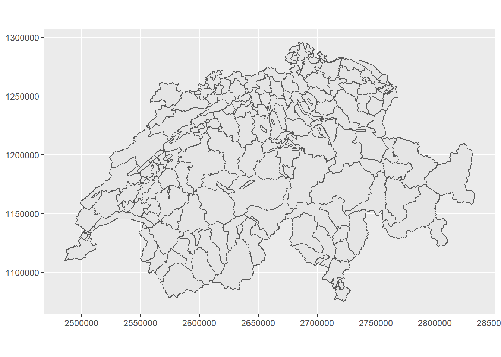
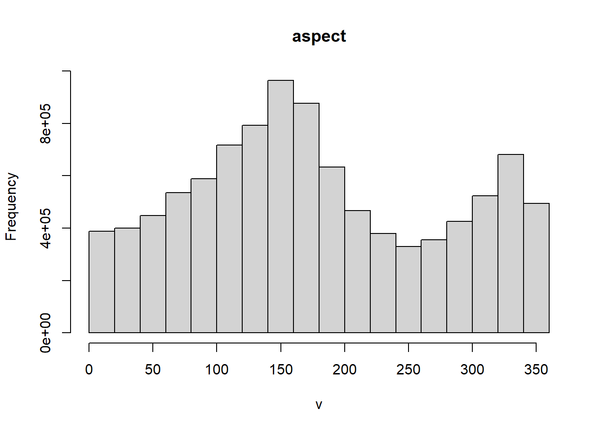
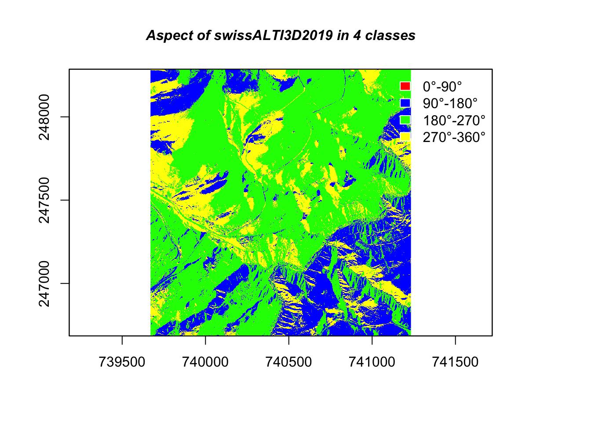
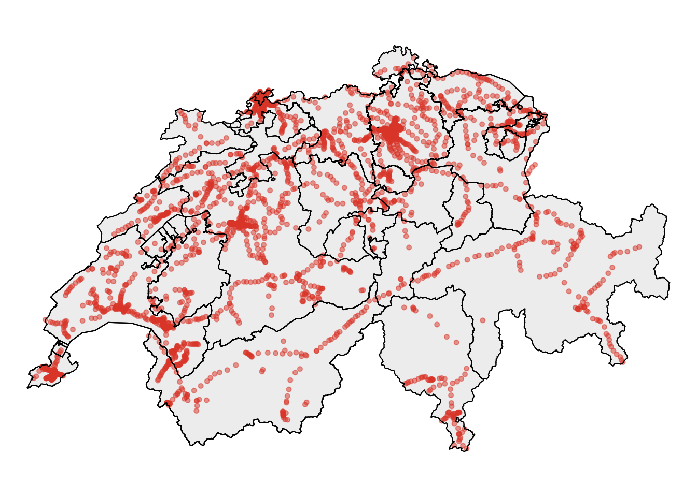
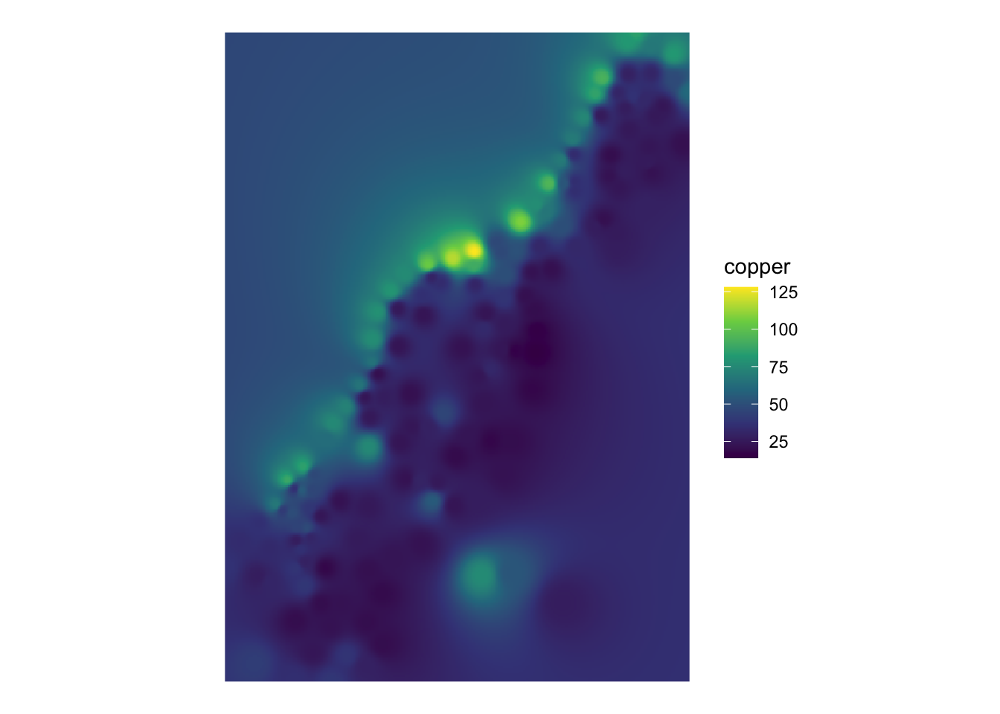

5.1 Projections and Transformations Toolset
Quite often in GIS, users found themselves before the necessity of transforming (reprojecting) the coordinate system of a dataset (vector or raster). In fact this is one of the most commonly used operations. In ArcGIS pro the aforementioned action is performed using the following tools:
Project (Data Management)-> Projects spatial data from one coordinate system to another.Project Raster (Data Management)-> Transforms a raster dataset from one coordinate system to another.
The question now is how we can perform similar operations with R.
5.1.1 Reproject vector data in R
For our example we will use the following dataset.
- bezirke.gpkg -> Dataset that depicts the Municipal structure in Switzerland
R and more specifically sf package offers options (functions) not only for transforming the coordinate system of a dataset, but also for identifying the current existing one. Let’s dive in :)
# Importing the dataset
library(sf)
bezirke <- read_sf("sample_data/other/bezirke.gpkg") # Visualising the imported dataset
library(ggplot2)
ggplot() + geom_sf(data = bezirke)
In order to identify the current coordinate system of a dataset, sf package offers the function st_crs. The main usage of the function is to retrieve the coordinate reference system from an sf object.
# retrieving the coordinate of the imported layer
st_crs(bezirke)## Coordinate Reference System: NAAs an output we received that there is no assigned coordinate system to this specific dataset. st_set_crs function helps us assigning a coordinate system to a dataset.
# Assigning the World Geodetic System (WGS84) as a coordinate system to our dataset
bezirke <- st_set_crs(bezirke, 4326)In the function above, the number 4326 represents the EPSG Geodetic Parameter Dataset (EPSG) of the respective coordinate system. EPSG is a public registry of geodetic datums, spatial reference systems, Earth ellipsoids, coordinate transformations and related units of measurement.
st_crs(bezirke)## Coordinate Reference System:
## User input: EPSG:4326
## wkt:
## GEOGCRS["WGS 84",
## DATUM["World Geodetic System 1984",
## ELLIPSOID["WGS 84",6378137,298.257223563,
## LENGTHUNIT["metre",1]]],
## PRIMEM["Greenwich",0,
## ANGLEUNIT["degree",0.0174532925199433]],
## CS[ellipsoidal,2],
## AXIS["geodetic latitude (Lat)",north,
## ORDER[1],
## ANGLEUNIT["degree",0.0174532925199433]],
## AXIS["geodetic longitude (Lon)",east,
## ORDER[2],
## ANGLEUNIT["degree",0.0174532925199433]],
## USAGE[
## SCOPE["unknown"],
## AREA["World"],
## BBOX[-90,-180,90,180]],
## ID["EPSG",4326]]After rerunning the st_crs function, we are getting now that the assigned
coordinate system of the dataset is World Geodetic System (WGS84).
As a next step, we might want to transform the dataset to the Swiss coordinate system.
The respective EPSG for code for the latest Swiss coordinate system
(CH1903+LV95) is 2056. For this purpose we use the st_transform function of the sf package.
Important
> Click to expand!
st_set_crs function does not reproject the coordinates of the given dataset. In other words, it does not affect the actual geometry column of the sf object. st_tranform on the other hand indeed does indeed reproject the dataset to another coordinate system.bezirke_swiss <- st_transform(bezirke, 2056)
# retrieve the coordinate system
st_crs(bezirke_swiss)## Coordinate Reference System:
## User input: EPSG:2056
## wkt:
## PROJCRS["CH1903+ / LV95",
## BASEGEOGCRS["CH1903+",
## DATUM["CH1903+",
## ELLIPSOID["Bessel 1841",6377397.155,299.1528128,
## LENGTHUNIT["metre",1]]],
## PRIMEM["Greenwich",0,
## ANGLEUNIT["degree",0.0174532925199433]],
## ID["EPSG",4150]],
## CONVERSION["Swiss Oblique Mercator 1995",
## METHOD["Hotine Oblique Mercator (variant B)",
## ID["EPSG",9815]],
## PARAMETER["Latitude of projection centre",46.9524055555556,
## ANGLEUNIT["degree",0.0174532925199433],
## ID["EPSG",8811]],
## PARAMETER["Longitude of projection centre",7.43958333333333,
## ANGLEUNIT["degree",0.0174532925199433],
## ID["EPSG",8812]],
## PARAMETER["Azimuth of initial line",90,
## ANGLEUNIT["degree",0.0174532925199433],
## ID["EPSG",8813]],
## PARAMETER["Angle from Rectified to Skew Grid",90,
## ANGLEUNIT["degree",0.0174532925199433],
## ID["EPSG",8814]],
## PARAMETER["Scale factor on initial line",1,
## SCALEUNIT["unity",1],
## ID["EPSG",8815]],
## PARAMETER["Easting at projection centre",2600000,
## LENGTHUNIT["metre",1],
## ID["EPSG",8816]],
## PARAMETER["Northing at projection centre",1200000,
## LENGTHUNIT["metre",1],
## ID["EPSG",8817]]],
## CS[Cartesian,2],
## AXIS["(E)",east,
## ORDER[1],
## LENGTHUNIT["metre",1]],
## AXIS["(N)",north,
## ORDER[2],
## LENGTHUNIT["metre",1]],
## USAGE[
## SCOPE["unknown"],
## AREA["Europe - Liechtenstein and Switzerland"],
## BBOX[45.82,5.96,47.81,10.49]],
## ID["EPSG",2056]]5.1.2 Reproject raster data in R
Working with Raster datasets in GIS of operations is of equal importance, as working with vector ones. One of the spatial properties of raster datasets is the the Coordinate Reference System (CRS). CRS is the specific system that “associates” the raster coordinates (which are just pairs of x/y values) to geographic locations. In ArcGIS pro the tool for projecting a raster dataset is called Project Raster (Data Management). Let’s see how we can perform the same operation with R.
# Importing the datasets
library(raster)
# Dataset derived from the spatial interpolation of all the available "recycling points"
# in the city of Wädenwil
raster_recycling <- raster("sample_data/Raster/raster_recycling.tif") # CRS -> CH1903+LV95
# Dataset representing the public transport quality in the city of Wädenswil
publicTransport <- raster("sample_data/Raster/publicTransport_waedi.tif") # CRS -> WGS84 # Plot the raster dataset - World Geodetic System 1984
plot(publicTransport,las=1,
main = "Quality of public transport in the city of Wädenwil - CRS: WGS84",
cex.main=1,font.main=4)
We can use the projectRaster() function to reproject a raster into a new CRS.
The first argument of the aforementioned function is the raster dataset we want to reproject,
while the second one is the dataset to whose projection we are targeting to. So, in
our case, we are targeting to the coordinate system of the raster_recycling
dataset.
It is important to remember that raster reprojection only works when the raster
object has already a defined CRS.
# Transform the coordinate system of the raster dataset publicTransport_CH
# into the Swiss Coordinate system - CH1903+LV95
publicTransport_CH = projectRaster(publicTransport, raster_recycling)# Plot the raster dataset - Swiss Coordinate System CH1903+LV95
plot(publicTransport_CH,las=1,
main = "Quality of public transport in the city of Wädenwil - CRS: CH1903+LV95",
cex.main=1,font.main=4)
5.1.3 Generate Tessellation
- Hexagon
- Tranverse Hexagon
- Square
- Diamond
- Triangle
–>
5.1.3.1 Clip Raster
In GIS operations is quite common the necessity of “clipping” an area based on
some specific region of interest. This is a quite useful and necessary procedure
not only when we are dealing with vector datasets, but also when we have to work
with raster ones. In ArcGIS pro the procedure of “cutting” a portion of a raster
dataset, mosaic dataset, or an image service layer is performed using
Clip Raster tool.
In R, the respective operation can be performed using the mask() function. For
the example below, we are using the following datasets:
- ARE_waedi: Vector dataset that depicts the public transport connection quality in the city of Wädenswil
- raster_recycling: Dataset derived from the spatial interpolation of all the available “recycling points”in the city of Wädenwil
# Read raster dataset
library(raster)
library(stars)
library(sf)
library(dplyr)
library(stars)
# Insert a vector dataset that depicts the public transport connection quality in
# the city of Wädenswil and plot it
ARE_waedi <- read_sf("sample_data/Entsorgung_Waedenswil/ARE_waedenswil.shp")
# Read the raster dataset and plot it
raster_recycling <- raster("sample_data/Entsorgung_Waedenswil/abfall_raster.tif")Plot the two datasets one over the other. 
In our case, the vector dataset serves as the clipping extent for the clipping operation.
recycle_Waedi_clip <- mask(raster_recycling,ARE_waedi)Visualising the clipped output 
library(sf)
library(tidyverse)
library(raster)